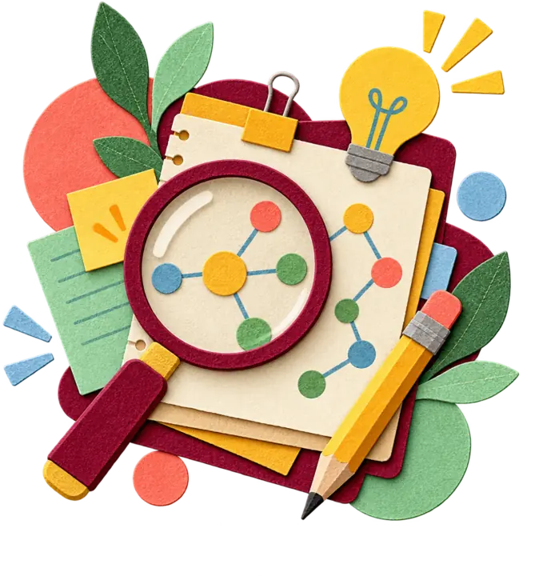
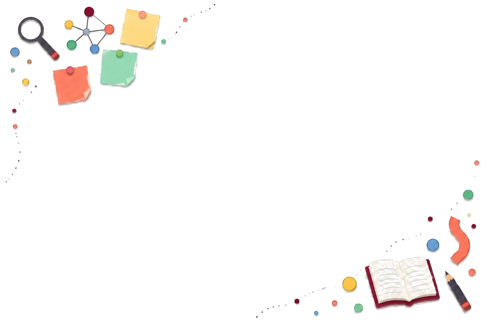

01
少人数ゼミで進める教科等横断的な探究学習
小学校の総合的な学習の時間に、子どもの関心と各教科の学びを結び付け、少人数・異学年で自分の問いを追究する教育課程を構想。
総合・探究研究テーマと教育実践の記録

“ 目の前の子どもたちの学びを、より確かに支えるために。 ”
小学校教育を軸に、探究学習・生成AI活用・社会科・道徳科・ふるさと教育をつなぎ、 一人一人が自ら学びを進められる授業と教育課程を研究しています。

小学校の総合的な学習の時間に、子どもの関心と各教科の学びを結び付け、少人数・異学年で自分の問いを追究する教育課程を構想。
総合・探究学び方や表し方に選択肢を用意するUDL（学びのユニバーサルデザイン）に、生成AIを「問い返し相手」として活用。資料と照らし合わせ、学び方を自ら調整する授業を研究。
生成AI・UDL地域や社会の課題について資料を集め、確かめ、比べ、関連付ける。多様な立場を踏まえ、根拠をもとに判断し表現する学習を研究。
社会科教育知識・技能と思考力・判断力・表現力を結び付け、子どものつまずきや伸びに応じて指導と評価を改善。一人一人の学力向上につなげる方法を研究。
学力向上AIの答えを資料と照らし合わせ、誤りや偏り、個人情報、著作権、他者への影響を手掛かりに、人が判断する責任を考える学習を構想。
道徳・AI倫理唐津・佐賀の歴史、文化、自然、産業と地域の課題を教科等横断的に学び、自分なりの愛着や誇りを育てる独自のカリキュラムを構想中。
ふるさと教育・構想中教育現場での実践を通じた長期的な研究